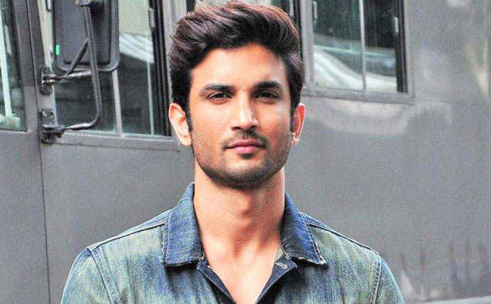

Sushant Singh Rajput was an Indian actor who appeared in several Bollywood films. He was born on January 21, 1986, and passed away on June 14, 2020. Rajput started his career with television serials and later moved to films. He made his film debut in the 2013 film Kai Po Che! and went on to star in several successful films like M.S. Dhoni: The Untold Story, Kedarnath, and Chhichhore.
Notable Achievements
- Received a Screen Award and a Producers Guild Film Award for Best Male Debut for his role in Kai Po Che!
- Received a Filmfare Award for Best Actor (Critics) for his role in M.S. Dhoni: The Untold Story
- Received a National Film Award for Best Feature Film in Hindi as a producer for the film Chhichhore
- He got rank 7 in AIEEE
Famous Quotes
"I don't have any godfather in the industry."
"I don't choose films, films choose me."
"I'm not a star, I'm an actor."